Half-Weekly market outlook 03.06.24 – 05.06.24
Macro Data
Today – Monday – we already had HCOB manufacturing PMIs from Europe for May on the macro data front – all of them not really world-changing and on the soft side. Here’s the overview:
Spain: 54 vs 52.5 ex vs 52.2 last
Italy: 45.6 vs 48 ex vs 47.3 last
France: 46.4 vs 46.7 ex vs 46.7 last
Germany: 45.4 vs 45.4 ex vs 45.4 last
Europe: 47.3 vs 47.4 ex vs 47.4 last
We also got China’s Caixin manufacturing PMI at 51.7 vs 51.5 ex vs 51.4 last, as well as Swiss SVME PMI at 46.4 vs 45.4 ex vs 41.4 last, and then UK S&P manufacturing PMI at 51.2 vs 51.3 ex and 51.3 last.
All in all, really nothing world-changing, but most on the softer side of things still.
Next on the dock is today’s CAD S&P manufacturing PMI for May, which is likely not a huge mover at 9:30 am EST.
Fifteen minutes later, we get the US S&P manufacturing PMI, which is likely not a huge mover either, because the big deal is coming at the 10 am dock – ISM manufacturing!
We already saw the last couple of months on the headline being relatively stable just below the 50 mark, with the last one for April coming in at 49.2 vs. a consensus of 50.0.
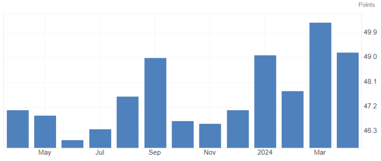
US ISM manufacturing Headline
This time around, the consensus is for 49.6, which would mean a slight increase but still in contraction territory.
The employment sub-index saw two straight increases now from 45.9 in February to 47.4 in March to 48.6 in April. With May increasing again, we could finally be back into expansion territory on that index for the first time since the September 2023 data.
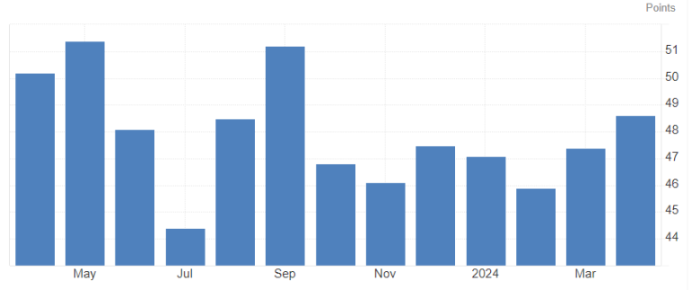
US ISM manufacturing Employment
New orders are relatively flat around the 50 level for the year so far, and I don’t expect any meaningful change to that here. April came in at 49.1, March at 51.4, and February at 49.2.
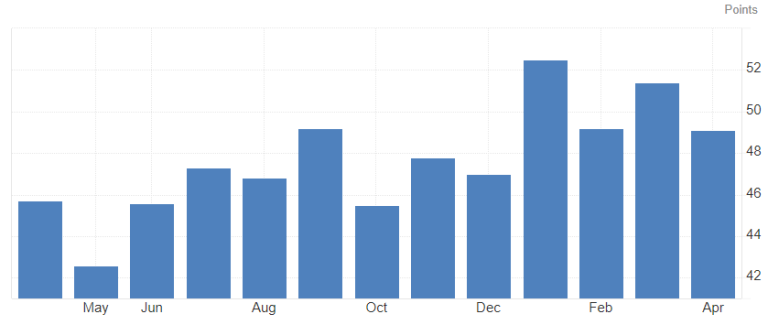
US ISM manufacturing New Orders
The probably most watched and most important part of the ISM report besides the headline is the prices-paid index. We saw steep increases over the last couple of months in that report. The low came in at the June 2023 data at 41.8. We then saw a couple of bounces and dips again, going sort of sideways around 43-48 until we clearly “broke” higher with the start of the new year. January showed an above 50 reading at 52.9 for the first time since April 2023. Since then, we had consecutive >50 reports and accelerating up with February at 52.9, March at 55.8, and April at 60.9.
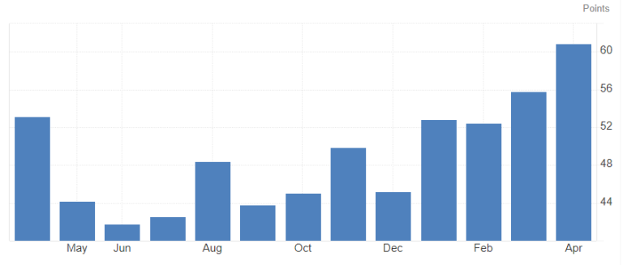
US ISM manufacturing Prices Paid
There is no real consensus number to find for that sub-index, but anything above last month would be considered really, really bad for the inflation outlook. Between 55 and 60 it would still be pretty bad, but fear would probably ease down a bit nonetheless. Below 55 and I’m pretty sure the whole “inflation is here to stay and accelerating” scenario is taking a serious hit.
All in all, I expect the report to come in pretty decent. I’m not expecting HUGE acceleration on any index though. Keep an eye on bonds – if the report is hot, we likely see further selling. If the report is soft, we likely see a decent bounce higher, which could be faded into the later part of the week as there is quite a bit more on the agenda there!
Tomorrow is kicking off with Swiss CPI data for May: 0.4% on the MoM headline is expected vs. a 0.3% MoM reading for April.
I honestly don’t expect a huge outbreak to the upside on the report, but we have to admit that the inflation data is going strong in the central European country as well so far this year.
The low came in for November 2023 at -0.2% MoM and jumped to +0.6% in February. Since then it cooled down a bit with a 0.0% and a 0.3% reading.
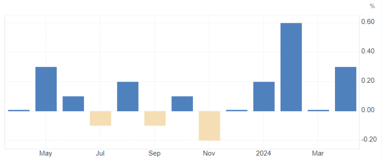
Switzerland CPI MoM Headline
It could be a very important data point for the CHF, as it’s holding up well so far after the bigger drop earlier in the year – another miss on the data front could send the CHF lower again, which is what I’m actually looking for in the last leg lower that I expect in the mid-term.
The data point drops at 6:30 am GMT.
We then get some German employment data, even though I think this is not going to be a long-lasting data point. Every move on that is probably going to fade.
Next on the list, we get JOLTS job openings at the 10 am EST dock.
That is a more important data point, but still, I think any price move on it is not going to last very long, except if we have a huge deviation from the forecasts.
We saw a constant decrease in the numbers, so the forecast is for 8.34m new employees for April (note, this isn’t May yet).
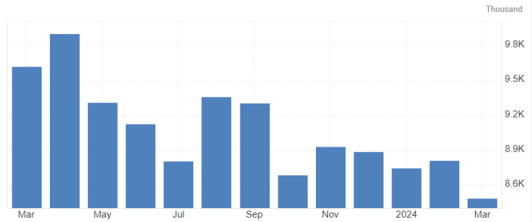
US JOLTS job openings
Again, I’m not expecting this to have a too lasting impact, but it could move the USD a couple of pips nonetheless. That’s it then for Tuesday!
Wednesday is starting off with Australian quarterly GDP numbers. Note that this is the first look at Q1 so maybe we get some surprises – don’t expect any price impact to last too long though; a fade of whatever move we get is very likely, at least a big part of it.
Expected is a 0.2% QoQ reading – flat with the last reading and a decrease from 1.5% to 1.2% on the YoY reading.
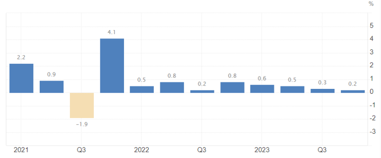
Australian GDP QoQ
The data drops at 01:30 GMT.
Next, just 15 minutes later, is the China Caixin services PMI for May, which is expected to stay around the 52.5 area – any bigger deviation there could likely lead to some extended moves in still-thin Asia trading.
We then get European HCOB services PMIs for May – lots of those are expected to stay flat with the last report – I think we could be in for some surprises there, but price impact is probably limited still. Nevertheless, keep an eye on that! Dropping from 07:15 to 08:00 GMT.
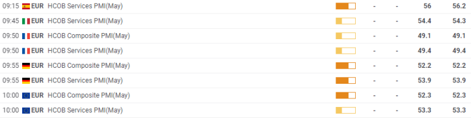
One hour later, we get European PPI, which is likely just a mini impact and fade on the EUR, if anything.
The highlights for Wednesday kick off in NY trading, with ADP employment change (May) at 8:15 am EST along with S&P composite and services PMI for May at 9:45 am and ISM services PMI at 10 am. In between, we have the BoC as well!
ADP: Expected is a change of +173k. We didn’t see a lot of changes in that report in the last 3 months, coming in at +176k in February, +208k in March, and +192k in April.
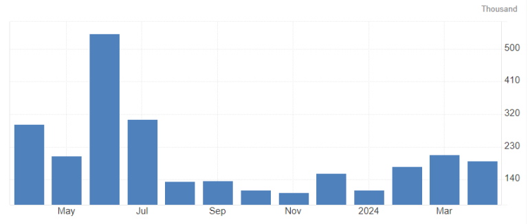
US ADP employment change
I’m personally expecting some better numbers than the forecast but think the impact would nonetheless be limited to a couple of pips across the board. The bigger highlight is for sure the BoC and ISM that day.
ISM services: We saw a relatively steady decline of the headline over the last 4 reports going from 53.4 in January to 49.4 in the last report. That said, it’s still around the 50 mark and I honestly expect this to bounce up a bit, but not too much either.
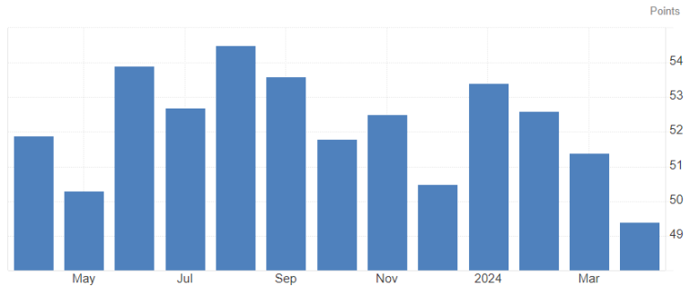
US ISM services PMI Headline
Eyes are going to be on the sub-indexes again.
Employment is going sideways so far right below 50 with the last reading at 45.9. I’m again expecting a bounce in that reading.
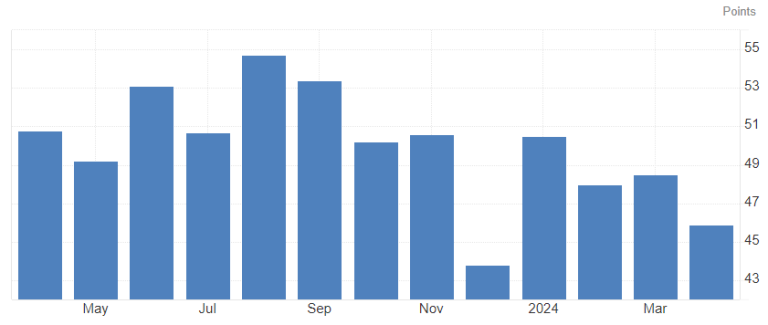
US ISM services PMI Employment
New orders saw a steady decline as well since early in the year, but is holding well above 50 so far at 52.2 last month.
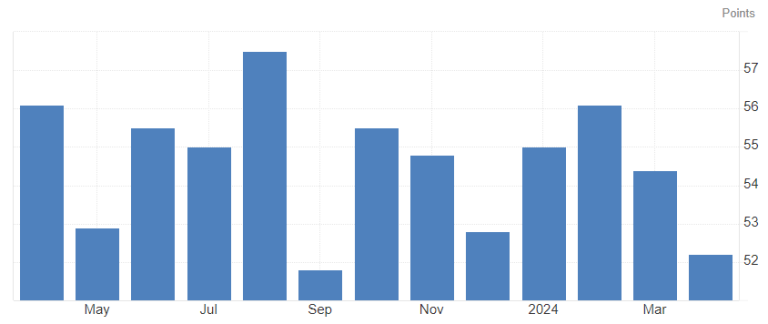
US ISM services PMI New Orders
Prices paid is the big concern once again. The report jumped from 53.4 in March to 59.2 in April.
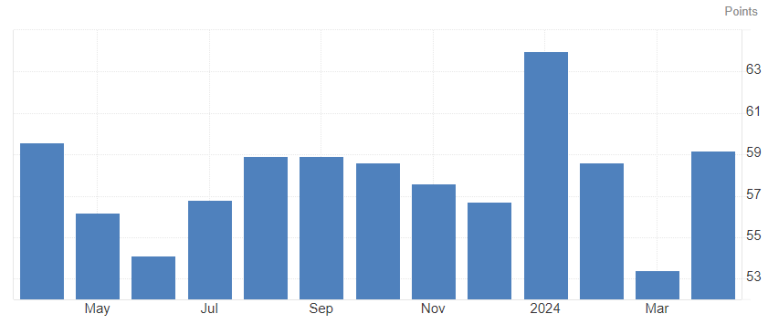
US ISM services PMI Prices Paid
If that comes in hot again, we are definitely in for a rough ride in bonds, a strong USD, and risk assets selling off too before fading it once again.
The BoC interest rate decision is coming up on Wednesday at 9:45 am EST, right before the ISM report drops. The press conference with Governor Macklem is set up at 10:30 am EST.
The current rate is 5.00%, and it’s expected that the BoC will cut by 25bp this week to 4.75%.
Let’s have a look at the recent data points in Canada:
Inflation: Core inflation YoY dropped to 1.6% in April, which is the lowest since March 2021.
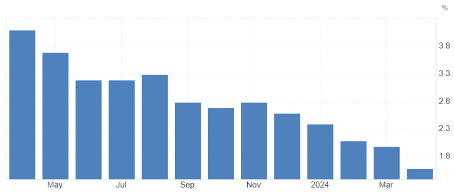
CAD Core CPI YoY
Headline inflation YoY dropped to 2.7% in April, which is also the lowest since March 2021.
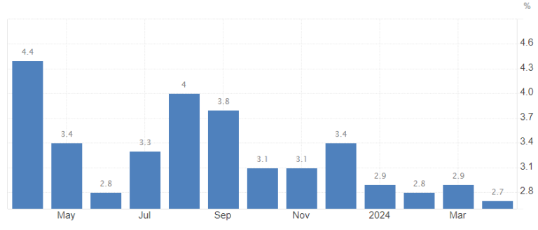
CAD Headline CPI YoY
Digging down to the MoM readings though, we see things have been way more stagnant recently, with headline MoM coming in at 0.3%, 0.6%, and 0.5% in the last 3 months respectively. Core inflation MoM came in at 0.1%, 0.5%, and 0.2% in the same period.
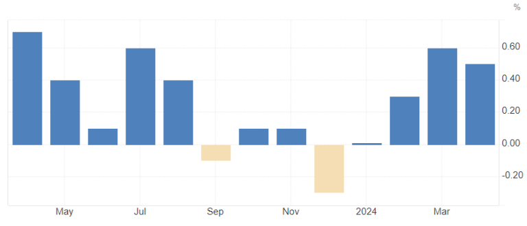
CAD Headline CPI MoM
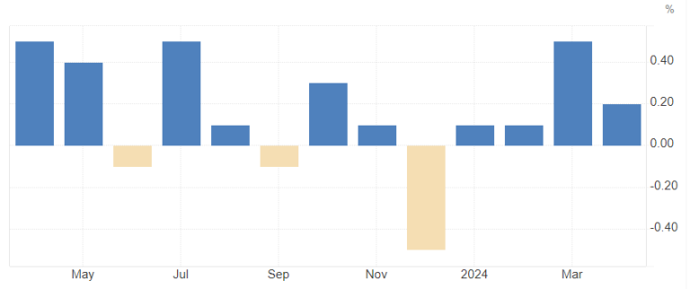
CAD Core CPI MoM
All in all, it seems like inflation is on track to cool down enough to at least ease some of the restrictive levels of the interest rate, which is exactly what the BoC is going to do if they indeed cut down the first 25bp.
Canadian unemployment is still ticking up slowly in the meantime, with a 6.1% reading in April, up from 5.7% at the beginning of the year and 5.0% in April 2023.
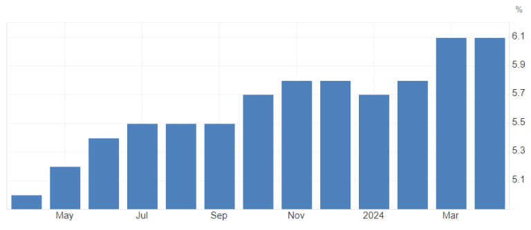
CAD unemployment rate
Meanwhile, the participation rate is relatively steady around 65.5%, and wages are slowly but steadily rising.
Easing rates to support the labor market is for sure adding further pressure on the BoC to actually do it. The rise in wages and the latest surge in inflation numbers is not really comforting though.
Another aspect is the continuation of quantitative tightening (QT) – it is expected that the central bank will continue to do so, but it’s not yet clear on the details. The latest report noted that the bank did reduce their holdings by roughly 180bn to roughly 300bn as of March 2024 and that the BoC will get back to “normalizing” their balance sheet management over the coming months.
For the last BoC press release statement from March click here, for a summary of the QT program and normalization of the balance sheet, click here.
Overall, I expect that the CAD will have a bit of a choppy day. We will probably see it dipping quite a bit on the actual cut (I don’t think it’s fully priced in yet and many hedges are coming off still), and then maybe a fade, or not. It’s really hard to tell honestly.
If there is a bigger spike in the CAD on a cut, I would definitely sell it and fade the move back to where it started and then some more during the press conference. Macklem is likely to be dovish, but the risk is still for the bank to be more reluctant to cut and be dovish with the outlook due to the last rise in inflation data as stated before.
If the BoC doesn’t cut, we are due for a bigger rally in CAD that could last a couple of days, but it is definitely a fade in the longer picture too—it’s just a delaying of cuts nonetheless.
Note: the BoC would be the first of the big 8 central banks to cut rates this year and cycle.
I will come up with the second part of the weekly outlook for Thursday and Friday at a later point this week, so be sure to stay alert!
Dom
.png)
.png)
.png)